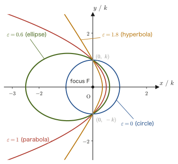

Chapter 6Motion in Polar Coordinates and Conic Sections
The motion of a person on a swing as seen from the pivot of the swing, the motion of a point on a record, and the motion of a planet orbiting the Sun—in every one of these, it is easier to work with polar coordinates, which specify a position by the distance $r$ from the origin and an angle $\theta$, than with $xy$ rectangular (Cartesian) coordinates. In Chapter 3 we already introduced the basis vectors $\bm{e}_r,\bm{e}_\theta$ of polar coordinates and learned how to express the acceleration by its tangential and normal components. In this chapter, on the same stage of polar coordinates, we use a completely different tool (the transformation of vector components by a rotation matrix) and follow, without skipping a single step, how to write the velocity and acceleration using only $r,\theta$ and their derivatives.
In the second half we change the subject and treat curves that can be written in polar coordinates in the form $r=\dfrac{k}{1+\varepsilon\cos\theta}$—conic sections. In High School Mathematics (AD 01) you should have learned the circle, the ellipse, the parabola, and the hyperbola as separate figures, each in its standard form (such as $x^2/a^2+y^2/b^2=1$); in fact, however, all four kinds of curves differ only in the value of a single parameter $\varepsilon$ (the eccentricity) when the distance $r$ from the origin (one of the focal points) is expressed by the one formula above. This fact is also the reason why we treat, one after the other in this chapter, the two topics that seem unrelated at first glance, “the description of motion in polar coordinates” and “the classification of conic sections”: when we find the orbit of a planet around the Sun in Chapter 8, the orbit takes exactly this form $r=k/(1+\varepsilon\cos\theta)$, and it follows that the planet traces an elliptical orbit (Kepler's first law). This chapter is also a preparation for that.
Note that the same content as the first half of this chapter (Sections 6.1 and 6.2) is also treated in the companion volume “University Mathematics” (AD 02), Section 16.6. As in this chapter, AD 02 differentiates $x=r\cos\theta,\ y=r\sin\theta$ with respect to time and converts to the polar components $(V_r,V_\theta)$ by a rotation matrix to derive the result (it uses the capital letters $V$ and $A$ for the symbols), so it is a good idea to compare the two. In this chapter we also verify that result from the viewpoint of “projection onto $\bm{e}_r,\bm{e}_\theta$”, and an alternative proof that uses the time derivatives of the basis vectors, such as $\dot{\bm e}_r=\dot\theta\bm e_\theta$, is treated in Exercise 6.4.
- How to convert between the rectangular velocity components $(v_x,v_y)$ and the polar velocity components $(v_r,v_\theta)$ by means of a rotation matrix, and how $v_r=\dot r,\ v_\theta=r\dot\theta$ follow from it
- Applying the same method to the acceleration to derive $a_r=\ddot r-r\dot\theta^2,\ a_\theta=2\dot r\dot\theta+r\ddot\theta=\dfrac1r\diff{(r^2\dot\theta)}{t}$, and understanding the physical meaning of each term (the radial stretching, the centripetal component, and the term in the angular direction). Note that $a_r\neq\ddot r$
- How to read the basis vectors $\bm{e}_r,\bm{e}_\theta$ as the column vectors of a rotation matrix
- Proving, by converting to the standard form in rectangular coordinates, the general equation $r=k/(1+\varepsilon\cos\theta)$ of a conic section in polar coordinates and the classification into the circle, ellipse, parabola, and hyperbola by the eccentricity $\varepsilon$ (Theorem 6.1)
- Anticipating how the angular component of the acceleration in polar coordinates is connected with the conservation law for angular momentum $L=mr^2\dot\theta$ (constant areal velocity, Kepler's second law) (a preparation for Chapter 8)
Source notes: Yasuhide Mochizuki, Physics Notes: Mechanics, pp. 16–18.
6.1 Velocity in Polar Coordinates
As we saw in Chapter 3, the position of a point in a plane can be expressed, instead of by the rectangular coordinates $(x,y)$, by the pair $(r,\theta)$ (polar coordinates) of the distance $r\ [\mathrm{m}]$ from the origin and the angle $\theta\ [\mathrm{rad}]$ measured from the $x$-axis. Now consider the two unit vectors at the position of the point: $\bm{e}_r$ (the radial direction, the direction from the origin toward the point) and $\bm{e}_\theta$ (the angular direction, the direction in which $\theta$ increases, perpendicular to $\bm{e}_r$). These are the basis vectors $\bm{e}_x,\bm{e}_y$ of rectangular coordinates rotated about the origin by the angle $\theta$. In this section we use a rotation matrix to derive how to express the velocity vector $\bm{v}$ in terms of these $\bm{e}_r,\bm{e}_\theta$—that is, the relation between the rectangular components $(v_x,v_y)$ and the polar components $(v_r,v_\theta)$ of the velocity.
6.1.1 Transformation of components by a rotation matrix
Derivation (first half): Conversion between rectangular components and polar components (Eq. Ⓐ)
(i) From the rectangular components to the polar components. Since $\bm{e}_r,\bm{e}_\theta$ are $\bm{e}_x,\bm{e}_y$ rotated by the angle $\theta$, to find the “components in the $(r,\theta)$ system” of a fixed vector (here the velocity $\bm v$) from its “components in the $(x,y)$ system”, it suffices to apply to the components the rotation opposite in direction to the rotation of the axes (the rotation by the angle $-\theta$) (the same argument is given in University Mathematics, Section 16.6. The relation is that if the axes are rotated by $+\theta$, the components of the same vector appear to be rotated by $-\theta$. See Figure 6.1). The matrix representing a rotation by an angle $\varphi$ is $\begin{bmatrix}\cos\varphi&-\sin\varphi\\\sin\varphi&\cos\varphi\end{bmatrix}$ (the planar version of University Mathematics, Theorem 16.1), so substituting $\varphi=-\theta$ gives
$$ \begin{bmatrix}\cos(-\theta) & -\sin(-\theta)\\ \sin(-\theta) & \cos(-\theta)\end{bmatrix}\begin{bmatrix}v_x\\ v_y\end{bmatrix}=\begin{bmatrix}v_r\\ v_\theta\end{bmatrix} $$Since cosine is an even function ($\cos(-\theta)=\cos\theta$) and sine is an odd function ($\sin(-\theta)=-\sin\theta$), tidying this up gives
\begin{equation} \begin{bmatrix}\cos\theta & \sin\theta\\ -\sin\theta & \cos\theta\end{bmatrix}\begin{bmatrix}v_x\\ v_y\end{bmatrix}=\begin{bmatrix}v_r\\ v_\theta\end{bmatrix} \label{eq:6-vpolar-raw} \end{equation}This is what we obtain.
Direct check (via the inner product, or dot product). Let us check the claim of a “$-\theta$ rotation” by computing the components directly. Since $v_r$ is the component of $\bm v$ in the $\bm e_r$ direction and $v_\theta$ is its component in the $\bm e_\theta$ direction, we can write $v_r=\bm v\cdot\bm e_r$ and $v_\theta=\bm v\cdot\bm e_\theta$ using the inner product. As we saw in Section 3.2, $\bm e_r=(\cos\theta,\ \sin\theta)$ and $\bm e_\theta=(-\sin\theta,\ \cos\theta)$ (components in the $\bm e_x,\bm e_y$ directions), so
$$ v_r=\bm v\cdot\bm e_r=v_x\cos\theta+v_y\sin\theta,\qquad v_\theta=\bm v\cdot\bm e_\theta=-v_x\sin\theta+v_y\cos\theta $$which is exactly the same as the first and second rows obtained by multiplying out the matrix on the left-hand side of Eq. \eqref{eq:6-vpolar-raw}. Let us also check with numbers. When $\theta=90^\circ$, we have $\bm e_r=\bm e_y$ and $\bm e_\theta=-\bm e_x$, so $\bm v=\bm e_x$ ($v_x=1,\ v_y=0$) corresponds to $\bm v=-\bm e_\theta$, and we should have $(v_r,v_\theta)=(0,-1)$. Indeed, substituting into Eq. \eqref{eq:6-vpolar-raw} gives $\begin{bmatrix}\cos90^\circ&\sin90^\circ\\-\sin90^\circ&\cos90^\circ\end{bmatrix}\begin{bmatrix}1\\0\end{bmatrix}=\begin{bmatrix}0&1\\-1&0\end{bmatrix}\begin{bmatrix}1\\0\end{bmatrix}=\begin{bmatrix}0\\-1\end{bmatrix}$, which agrees.
(ii) Conversely, from the polar components to the rectangular components (Eq. Ⓐ). Let $M=\begin{bmatrix}\cos\theta&\sin\theta\\-\sin\theta&\cos\theta\end{bmatrix}$ denote the matrix acting on the column vector on the left-hand side of Eq. \eqref{eq:6-vpolar-raw}. Note that $M$ equals the transpose $R(\theta)^{\mathrm T}$ of the “rotation matrix $R(\theta)=\begin{bmatrix}\cos\theta&-\sin\theta\\\sin\theta&\cos\theta\end{bmatrix}$ by the angle $\theta$” (the matrix obtained by interchanging the rows and columns of a matrix $A$ is written $A^{\mathrm T}$ and is called the transpose of $A$; for $R(\theta)$, the first row $(\cos\theta,\,-\sin\theta)$ becomes the first column and the second row $(\sin\theta,\,\cos\theta)$ becomes the second column). A direct computation gives
$$ R(\theta)\,M=\begin{bmatrix}\cos\theta&-\sin\theta\\\sin\theta&\cos\theta\end{bmatrix}\begin{bmatrix}\cos\theta&\sin\theta\\-\sin\theta&\cos\theta\end{bmatrix} =\begin{bmatrix}\cos^2\theta+\sin^2\theta & \cos\theta\sin\theta-\sin\theta\cos\theta\\ \sin\theta\cos\theta-\cos\theta\sin\theta & \sin^2\theta+\cos^2\theta\end{bmatrix} =\begin{bmatrix}1&0\\0&1\end{bmatrix} $$(the diagonal entries are $\cos^2\theta+\sin^2\theta=1$, and the off-diagonal entries cancel each other to give $0$). That is, $R(\theta)M=I$ (the identity matrix), so $M$ is also the inverse matrix of $R(\theta)$ (this is itself the verification that $R(\theta)$ is an orthogonal matrix—a matrix whose transpose equals its inverse. See the computation of matrix products in University Mathematics, Section 8.1). This can be written as $R(\theta)^{\mathrm T}=R(\theta)^{-1}=R(-\theta)$ (the inverse of a rotation is the rotation in the opposite direction), which agrees with the meaning of the “$-\theta$ rotation” that appears in $M$. So multiplying both sides of Eq. \eqref{eq:6-vpolar-raw} by $R(\theta)$ from the left gives
$$ R(\theta)M\begin{bmatrix}v_x\\v_y\end{bmatrix}=R(\theta)\begin{bmatrix}v_r\\v_\theta\end{bmatrix} \qquad\Longrightarrow\qquad \begin{bmatrix}v_x\\v_y\end{bmatrix}=R(\theta)\begin{bmatrix}v_r\\v_\theta\end{bmatrix} $$(by $R(\theta)M=I$, the left-hand side becomes $\begin{bmatrix}v_x\\v_y\end{bmatrix}$ itself). Written out, this reads
\begin{equation} \begin{bmatrix}\cos\theta & -\sin\theta\\ \sin\theta & \cos\theta\end{bmatrix}\begin{bmatrix}v_r\\ v_\theta\end{bmatrix}=\begin{bmatrix}v_x\\ v_y\end{bmatrix} \qquad \cdots\ \text{Ⓐ} \label{eq:6-vA} \end{equation}This is Eq. Ⓐ.
6.1.2 Velocity by direct differentiation and Formula 6.1
Derivation (second half): Direct differentiation (Eq. Ⓑ) and the comparison of Ⓐ and Ⓑ
(iii) Finding $v_x,v_y$ by direct differentiation (Eq. Ⓑ). For a moving point, both $r$ and $\theta$ are functions $r(t),\ \theta(t)$ of time $t$ (when the point moves, both its distance from the origin and its direction change with time). On the other hand, if we differentiate $x=r\cos\theta,\ y=r\sin\theta$ directly with respect to time $t$, we can express $v_x,v_y$ using only $r,\theta$ and their derivatives. Using the product rule, we get
$$ v_x=\diff{x}{t}=\frac{\dd}{\dd t}(r\cos\theta)=\dot r\cos\theta+r\cdot\frac{\dd}{\dd t}(\cos\theta)=\dot r\cos\theta-r\dot\theta\sin\theta $$(The equation $\dfrac{\dd}{\dd t}\cos\theta(t)=-\sin\theta\cdot\dot\theta$ follows from the differentiation of composite functions (the chain rule). It is a two-stage differentiation: differentiating $\cos$ with respect to $\theta$ gives $-\sin\theta$, and then differentiating $\theta$ with respect to $t$ gives $\dot\theta$.) Similarly,
$$ v_y=\diff{y}{t}=\frac{\dd}{\dd t}(r\sin\theta)=\dot r\sin\theta+r\cdot\frac{\dd}{\dd t}(\sin\theta)=\dot r\sin\theta+r\dot\theta\cos\theta $$These two equations can be combined into exactly the form of the rotation matrix $R(\theta)$ multiplied onto the column vector $[\dot r,\ r\dot\theta]^{\mathrm T}$:
\begin{equation} \begin{bmatrix}\cos\theta & -\sin\theta\\ \sin\theta & \cos\theta\end{bmatrix}\begin{bmatrix}\dot{r}\\ r\dot{\theta}\end{bmatrix}=\begin{bmatrix}v_x\\ v_y\end{bmatrix} \qquad \cdots\ \text{Ⓑ} \label{eq:6-vB} \end{equation}(Indeed, writing out the product, the first row is $\dot r\cos\theta-r\dot\theta\sin\theta=v_x$ and the second row is $\dot r\sin\theta+r\dot\theta\cos\theta=v_y$, which agree with the two equations above.)
(iv) Comparison of Ⓐ and Ⓑ. Eq. \eqref{eq:6-vA} (Ⓐ) and Eq. \eqref{eq:6-vB} (Ⓑ) both have the form “multiplying some column vector by the same rotation matrix $R(\theta)$ gives $[v_x,v_y]^{\mathrm T}$”:
$$ R(\theta)\begin{bmatrix}v_r\\v_\theta\end{bmatrix}=\begin{bmatrix}v_x\\v_y\end{bmatrix}=R(\theta)\begin{bmatrix}\dot r\\r\dot\theta\end{bmatrix} $$As we saw in (ii), $R(\theta)$ has the inverse matrix $M=R(\theta)^{-1}$, so multiplying both sides by $M$ from the left eliminates $R(\theta)$ and gives
$$ \begin{bmatrix}v_r\\v_\theta\end{bmatrix}=\begin{bmatrix}\dot r\\r\dot\theta\end{bmatrix} $$That is,
\begin{equation} v_r=\dot r,\qquad v_\theta=r\dot\theta \label{eq:6-vresult} \end{equation}This is the result.
∎
Formula 6.1: Velocity in polar coordinates
The velocity vector $\bm v$ of a point moving in a plane can be written, using the basis vectors of polar coordinates, as
\begin{equation} \bm v=\dot r\,\bm e_r+r\dot\theta\,\bm e_\theta \label{eq:6-v-formula} \end{equation}That is, the component in the radial direction is $v_r=\dot r$, and the component in the angular direction is $v_\theta=r\dot\theta$. The speed is $\abs{\bm v}=\sqrt{\dot r^2+r^2\dot\theta^2}$ (by the Pythagorean theorem, since $\bm e_r\perp\bm e_\theta$).
Dimension check: $\dot r$ is in $\mathrm{m/s}$, and $r\dot\theta$ is in $\mathrm{m}\times\mathrm{rad/s}$; since $\mathrm{rad}$ is dimensionless (arc length divided by radius), this is $\mathrm{m/s}$. Both have the unit of velocity, so they may be added to form $\bm v$.
Intuition: What do $\dot r$ and $r\dot\theta$ represent?
$\dot r$ (read “r dot”; the time derivative $\dd r/\dd t$ of $r$) represents how much the distance $r$ from the origin increases or decreases per unit time—the speed of “approaching or receding” relative to the origin. On the other hand, $r\dot\theta$ equals the speed $r\omega$ obtained when moving on a circle of radius $r$ with the angular velocity $\dot\theta$ (read “theta dot”; the time derivative of $\theta$, which is exactly the quantity called the angular velocity $\omega$ in high school physics), and it represents the speed of “going around the origin.” In particular, when $r$ is constant ($\dot r=0$, pure circular motion), only $\bm v=r\dot\theta\,\bm e_\theta$ remains, which agrees exactly with the result learned in high school physics, “the speed of uniform circular motion is $v=r\omega$, and its direction is tangent to the circle.” Conversely, if $\theta$ is constant (rectilinear motion away from or toward the origin without changing the angle), only $\bm v=\dot r\,\bm e_r$ remains. In general motion these two effects (the radial stretching and the rotation) occur simultaneously—this is the meaning of Eq. \eqref{eq:6-v-formula}.
Example 6.1: From the velocity components in polar coordinates to the velocity components in rectangular coordinates
At a certain instant, the radial component of the velocity is $\dot r=2\ \mathrm{m/s}$ and the angular component is $r\dot\theta=3\ \mathrm{m/s}$. Suppose that $\theta=\pi/4\ (=45^\circ)$ at this instant. Find the velocity components $v_x,v_y$ in the rectangular (Cartesian) coordinate system.
Solution. Substituting $\dot r=2,\ r\dot\theta=3,\ \theta=\pi/4$ ($\cos\dfrac\pi4=\sin\dfrac\pi4=\dfrac{\sqrt2}{2}$) into Eq. Ⓑ (Eq. \eqref{eq:6-vB}) gives
$$ \begin{bmatrix}v_x\\v_y\end{bmatrix}=\begin{bmatrix}\cos\dfrac\pi4 & -\sin\dfrac\pi4\\[4pt] \sin\dfrac\pi4 & \cos\dfrac\pi4\end{bmatrix}\begin{bmatrix}2\\3\end{bmatrix} =\begin{bmatrix}\dfrac{\sqrt2}{2}\times2-\dfrac{\sqrt2}{2}\times3\\[6pt] \dfrac{\sqrt2}{2}\times2+\dfrac{\sqrt2}{2}\times3\end{bmatrix} =\begin{bmatrix}-\dfrac{\sqrt2}{2}\\[4pt] \dfrac{5\sqrt2}{2}\end{bmatrix} $$Therefore $v_x=-\dfrac{\sqrt2}{2}\approx-0.707\ \mathrm{m/s}$ and $v_y=\dfrac{5\sqrt2}{2}\approx3.54\ \mathrm{m/s}$. The reason $v_x$ is negative is that the contribution ($-r\dot\theta\sin\theta$) of the angular component $r\dot\theta=3$ to the $x$ direction is larger in magnitude than the contribution ($\dot r\cos\theta$) of the radial component $\dot r=2$ to the $x$ direction.
Check: The speed should not change under a rotation. From the rectangular components, $v_x^2+v_y^2=\dfrac12+\dfrac{25}{2}=13\ \mathrm{m^2/s^2}$; from the polar components, $\dot r^2+(r\dot\theta)^2=2^2+3^2=13\ \mathrm{m^2/s^2}$. The two agree ($\abs{\bm v}=\sqrt{13}\approx3.61\ \mathrm{m/s}$).
6.1.3 Reading off the basis vectors
This result can also be confirmed from a different point of view. The velocity vector $\bm v$ is the same $\bm v$ whether we write it with the basis vectors of the $(x,y)$ system or with those of the $(r,\theta)$ system. Let us use the notation in which $\bm v=v_x\bm e_x+v_y\bm e_y$ is written as the product of the “row vector” $[\bm e_x\ \ \bm e_y]$, in which the basis vectors are lined up side by side, and the column vector of the components. Since $v_x=\dot x,\ v_y=\dot y$, we have
$$ \bm v=[\bm e_x\ \ \bm e_y]\begin{bmatrix}\dot x\\ \dot y\end{bmatrix}=[\bm e_r\ \ \bm e_\theta]\begin{bmatrix}\dot r\\ r\dot\theta\end{bmatrix} $$This holds (the equality on the right is the content of Formula 6.1). Now, substituting Eq. Ⓑ ($[\dot x,\dot y]^{\mathrm T}=[v_x,v_y]^{\mathrm T}=R(\theta)[\dot r,r\dot\theta]^{\mathrm T}$) into the left-hand side, we obtain
$$ [\bm e_r\ \ \bm e_\theta]\begin{bmatrix}\dot r\\ r\dot\theta\end{bmatrix}=[\bm e_x\ \ \bm e_y]\,R(\theta)\begin{bmatrix}\dot r\\ r\dot\theta\end{bmatrix} $$For this relation to hold regardless of the values of $\dot r,\ r\dot\theta$, the basis vectors must be related by $[\bm e_r\ \ \bm e_\theta]=[\bm e_x\ \ \bm e_y]\,R(\theta)$. That is, $\bm e_r,\bm e_\theta$ are obtained by reading the first and second columns of the rotation matrix $R(\theta)$, respectively, as the components along the directions $\bm e_x,\bm e_y$:
\begin{equation} \bm e_r=\cos\theta\,\bm e_x+\sin\theta\,\bm e_y,\qquad \bm e_\theta=-\sin\theta\,\bm e_x+\cos\theta\,\bm e_y \label{eq:6-basis-vectors} \end{equation}(The first column $[\cos\theta,\sin\theta]^{\mathrm T}$ of $R(\theta)$ gives the components of $\bm e_r$, and the second column $[-\sin\theta,\cos\theta]^{\mathrm T}$ gives the components of $\bm e_\theta$.) This result is exactly the same as the expression derived in Chapter 3, Formula 3.2 from the geometric argument that “$\bm e_r$ is the unit vector pointing in the direction at angle $\theta$ from the $x$-axis, and $\bm e_\theta$ points in the direction obtained by rotating that direction a further $90^\circ$”—we have confirmed that two entirely different methods, the algebraic route taken this time (reading off the column vectors of the rotation matrix) and the geometric route (measuring the angle directly), lead to the same conclusion. We check this with concrete numbers in Example 6.2.
Example 6.2: Checking the components and signs of the basis vectors
(1) By reading off the column vectors of the rotation matrix $R(\theta)=\begin{bmatrix}\cos\theta&-\sin\theta\\\sin\theta&\cos\theta\end{bmatrix}$ in Eq. \eqref{eq:6-vA} (Eq. Ⓐ), write down the basis vectors $\bm e_r,\bm e_\theta$ in rectangular components, and confirm that they are mutually orthogonal unit vectors ($\bm e_r\cdot\bm e_\theta=0$, $|\bm e_r|=|\bm e_\theta|=1$).
(2) In writing down $\bm e_\theta$, a sign error was made, and it was written as $\bm e_\theta'=\sin\theta\,\bm e_x-\cos\theta\,\bm e_y$. Show that this error cannot be found by the orthogonality and unit-length checks in $(1)$, and find the error by considering the cases $\theta=0$ and $\theta=\pi/2$ geometrically.
Solution. (1) As stated in the main text, $\bm e_r$ is the first column $\begin{bmatrix}\cos\theta\\\sin\theta\end{bmatrix}$ of $R(\theta)$ and $\bm e_\theta$ is the second column $\begin{bmatrix}-\sin\theta\\\cos\theta\end{bmatrix}$, each read directly as the components along $\bm e_x,\bm e_y$:
$$ \bm e_r=(\cos\theta,\ \sin\theta),\qquad \bm e_\theta=(-\sin\theta,\ \cos\theta) $$Their magnitudes are, respectively,
$$ |\bm e_r|=\sqrt{\cos^2\theta+\sin^2\theta}=\sqrt1=1,\qquad |\bm e_\theta|=\sqrt{(-\sin\theta)^2+\cos^2\theta}=\sqrt{\sin^2\theta+\cos^2\theta}=1 $$so both are unit vectors of magnitude 1. The inner product is
$$ \bm e_r\cdot\bm e_\theta=\cos\theta\times(-\sin\theta)+\sin\theta\times\cos\theta=-\sin\theta\cos\theta+\sin\theta\cos\theta=0 $$so they are indeed orthogonal. (In general, the column vectors of an orthogonal matrix such as a rotation matrix are always mutually orthogonal unit vectors—this is also the origin of the name “orthogonal” matrix.)
(2) First, the incorrect $\bm e_\theta'=(\sin\theta,\ -\cos\theta)$ also has magnitude $\sqrt{\sin^2\theta+\cos^2\theta}=1$, and its inner product with $\bm e_r$ is $\cos\theta\sin\theta-\sin\theta\cos\theta=0$, so it satisfies both unit length and orthogonality anyway. In fact, $\bm e_\theta'=-\bm e_\theta$; it merely points in the direction exactly opposite to $\bm e_\theta$, so these two checks cannot tell them apart.
We therefore examine the direction directly. $\bm e_\theta$ is the unit vector in “the direction in which $\theta$ increases (counterclockwise).” When $\theta=0$, we have $\bm e_r=\bm e_x$, and the direction of counterclockwise motion from there is the $+\bm e_y$ direction, so we must have $\bm e_\theta=\bm e_y$. The expression in the main text gives $\bm e_\theta=(-\sin0,\ \cos0)=(0,\ 1)=\bm e_y$, which is correct, but the incorrect expression gives $\bm e_\theta'=(\sin0,\ -\cos0)=(0,\ -1)=-\bm e_y$, which points the opposite way. Likewise for $\theta=\pi/2$: the direction of counterclockwise motion from $\bm e_r=\bm e_y$ is the $-\bm e_x$ direction; the expression in the main text gives $(-\sin\frac\pi2,\ \cos\frac\pi2)=(-1,\ 0)$, which is correct, whereas the incorrect expression gives $(1,\ 0)=+\bm e_x$, which points the opposite way. Therefore the correct one is $\bm e_\theta=-\sin\theta\,\bm e_x+\cos\theta\,\bm e_y$.
6.2 Acceleration in Polar Coordinates — The Physical Meaning of Each Term
6.2.1 Derivation of the acceleration
We carry the same idea as for the velocity one step further and apply it to the acceleration. The acceleration is the time derivative of the velocity, that is, the second time derivative of the position. Below, $\ddot r$ (read “r double dot”; the second time derivative of $r$, $\dd^2r/\dd t^2$, which tells how the rate of change of the radial distance itself changes) and $\ddot\theta$ (read “theta double dot”; the second time derivative of $\theta$, $\dd^2\theta/\dd t^2$, called the angular acceleration, with unit $\mathrm{rad/s^2}$) will appear. Both $r=r(t),\ \theta=\theta(t)$ are functions of time.
For exactly the same reason as in Section 6.1 ($\bm e_r,\bm e_\theta$ are obtained by rotating $\bm e_x,\bm e_y$ through the angle $\theta$, so the inverse rotation $-\theta$ is used to transform components), the same rotation-matrix relation holds for the acceleration:
\begin{equation} \begin{bmatrix}\cos\theta & -\sin\theta\\ \sin\theta & \cos\theta\end{bmatrix}\begin{bmatrix}a_r\\ a_\theta\end{bmatrix}=\begin{bmatrix}a_x\\ a_y\end{bmatrix} \qquad \cdots\ \text{Ⓒ} \label{eq:6-aC} \end{equation}(If we replace $v_x,v_y,v_r,v_\theta$ by $a_x,a_y,a_r,a_\theta$, respectively, in the argument of Section 6.1, steps (i) and (ii), Eq. Ⓒ follows by exactly the same procedure. We do not repeat the derivation.)
Derivation: Second derivatives of $x=r\cos\theta,\ y=r\sin\theta$ and Eq. Ⓓ
Differentiating $v_x=\dot r\cos\theta-r\dot\theta\sin\theta$ (Section 6.1) once more with respect to $t$, we obtain $a_x=\ddot x=\dot v_x$. We apply the product rule to each of the two terms.
First term $\dfrac{\dd}{\dd t}(\dot r\cos\theta)$: Since this is the product of $\dot r$ and $\cos\theta$,
$$ \frac{\dd}{\dd t}(\dot r\cos\theta)=\ddot r\cos\theta+\dot r\cdot\frac{\dd}{\dd t}(\cos\theta)=\ddot r\cos\theta-\dot r\dot\theta\sin\theta $$($\dfrac{\dd}{\dd t}\cos\theta=-\sin\theta\cdot\dot\theta$ is the chain rule, as in Section 6.1.)
Second term $\dfrac{\dd}{\dd t}(r\dot\theta\sin\theta)$: This one is a product of three functions, $r,\dot\theta,\sin\theta$, so we use the product rule twice (the derivative of $fgh$ is $f'gh+fg'h+fgh'$). Letting $f=r,\ g=\dot\theta,\ h=\sin\theta$, we have $f'=\dot r,\ g'=\ddot\theta,\ h'=\cos\theta\cdot\dot\theta$ (chain rule), so
$$ \frac{\dd}{\dd t}(r\dot\theta\sin\theta)=\dot r\dot\theta\sin\theta+r\ddot\theta\sin\theta+r\dot\theta\cos\theta\cdot\dot\theta =\dot r\dot\theta\sin\theta+r\ddot\theta\sin\theta+r\dot\theta^2\cos\theta $$This is the result. Since the minus sign is attached to the latter term of $v_x=\dot r\cos\theta-r\dot\theta\sin\theta$, the whole of $a_x$ is the derivative of the first term minus the derivative of the second term:
$$ a_x=\big(\ddot r\cos\theta-\dot r\dot\theta\sin\theta\big)-\big(\dot r\dot\theta\sin\theta+r\ddot\theta\sin\theta+r\dot\theta^2\cos\theta\big) $$Collecting the terms in $\cos\theta$ and the terms in $\sin\theta$ separately, we get
\begin{equation} a_x=(\ddot r-r\dot\theta^2)\cos\theta-(2\dot r\dot\theta+r\ddot\theta)\sin\theta \label{eq:6-ax} \end{equation}That is the result ($-\dot r\dot\theta\sin\theta$ appears twice and combines into $-2\dot r\dot\theta\sin\theta$). We carry out exactly the same procedure for $v_y=\dot r\sin\theta+r\dot\theta\cos\theta$. We have $\dfrac{\dd}{\dd t}(\dot r\sin\theta)=\ddot r\sin\theta+\dot r\dot\theta\cos\theta$ and $\dfrac{\dd}{\dd t}(r\dot\theta\cos\theta)=\dot r\dot\theta\cos\theta+r\ddot\theta\cos\theta-r\dot\theta^2\sin\theta$ (the only difference is the sign, because the derivative of $h=\cos\theta$ is $-\sin\theta\cdot\dot\theta$), and this time we have the sum of the two terms, so
$$ a_y=\big(\ddot r\sin\theta+\dot r\dot\theta\cos\theta\big)+\big(\dot r\dot\theta\cos\theta+r\ddot\theta\cos\theta-r\dot\theta^2\sin\theta\big) $$ \begin{equation} a_y=(\ddot r-r\dot\theta^2)\sin\theta+(2\dot r\dot\theta+r\ddot\theta)\cos\theta \label{eq:6-ay} \end{equation}That is the result. Writing Eqs. \eqref{eq:6-ax} and \eqref{eq:6-ay} together in matrix form, we get
\begin{equation} \begin{bmatrix}\cos\theta & -\sin\theta\\ \sin\theta & \cos\theta\end{bmatrix}\begin{bmatrix}\ddot r-r\dot\theta^2\\ 2\dot r\dot\theta+r\ddot\theta\end{bmatrix}=\begin{bmatrix}a_x\\ a_y\end{bmatrix} \qquad \cdots\ \text{Ⓓ} \label{eq:6-aD} \end{equation}This is the matrix form (expanding the matrix product starting from the right, we can directly verify that it returns to Eqs. \eqref{eq:6-ax} and \eqref{eq:6-ay}). Eq. Ⓒ (Eq. \eqref{eq:6-aC}) and Eq. Ⓓ (Eq. \eqref{eq:6-aD}) both have the form in which the same rotation matrix $R(\theta)$, multiplied by some column vector, gives $[a_x,a_y]^{\mathrm T}$. By exactly the same argument as in Section 6.1, step (iv) (since $R(\theta)$ has an inverse matrix, we can multiply both sides from the left by $R(\theta)^{-1}$ to eliminate $R(\theta)$), we obtain
\begin{equation} a_r=\ddot r-r\dot\theta^2,\qquad a_\theta=2\dot r\dot\theta+r\ddot\theta \label{eq:6-aresult} \end{equation}Furthermore, $a_\theta$ can also be rewritten in another form. Computing $\dfrac{\dd}{\dd t}(r^2\dot\theta)$ with the product rule, we get
$$ \frac{\dd}{\dd t}(r^2\dot\theta)=2r\dot r\dot\theta+r^2\ddot\theta=r(2\dot r\dot\theta+r\ddot\theta) $$(The derivative of $r^2$ is $2r\dot r$; we applied the product rule to $r^2$ and $\dot\theta$.) Dividing both sides by $r$, we get
$$ a_\theta=2\dot r\dot\theta+r\ddot\theta=\frac1r\frac{\dd}{\dd t}\!\left(r^2\dot\theta\right) $$This gives an equivalent expression.
∎
Formula 6.2: Acceleration in polar coordinates
The polar components of the acceleration vector $\bm a$ of a point moving in a plane are
\begin{equation} a_r=\ddot r-r\dot\theta^2,\qquad a_\theta=2\dot r\dot\theta+r\ddot\theta=\frac1r\frac{\dd}{\dd t}\!\left(r^2\dot\theta\right) \label{eq:6-a-formula} \end{equation}That is, $\bm a=(\ddot r-r\dot\theta^2)\bm e_r+(2\dot r\dot\theta+r\ddot\theta)\bm e_\theta$.
Dimension check: $\ddot r$ has the unit $\mathrm{m/s^2}$; $r\dot\theta^2$ has $\mathrm{m\times(rad/s)^2=m/s^2}$; $2\dot r\dot\theta$ has $\mathrm{(m/s)\times(rad/s)=m/s^2}$; and $r\ddot\theta$ has $\mathrm{m\times rad/s^2=m/s^2}$. All four terms have the unit of acceleration, $\mathrm{m/s^2}$.
Caution: $a_r\neq\ddot r$ and $a_\theta\neq r\ddot\theta$
It is easy to jump to the conclusion, “Acceleration is the derivative of velocity, so differentiating $v_r=\dot r$ gives $a_r=\ddot r$, and differentiating $v_\theta=r\dot\theta$ gives $a_\theta=r\ddot\theta$,” but this is not correct. Since the directions of $\bm e_r,\bm e_\theta$ themselves change with time, differentiating the velocity $\bm v=\dot r\bm e_r+r\dot\theta\bm e_\theta$ produces, in addition to the derivatives of the components, terms that come from the change in direction of the basis vectors ($-r\dot\theta^2$ in $a_r$, and $\dot r\dot\theta$, which is half of $2\dot r\dot\theta$, in $a_\theta$) (Exercise 6.4).
Let us check with a concrete example. A point moving in uniform rectilinear motion in the $y$ direction at speed $u=1\ \mathrm{m/s}$ along the straight line $x=b$ at distance $b=1\ \mathrm{m}$ from the origin ($x=b,\ y=ut$) has acceleration $\bm a=\bm 0$, so $a_r=a_\theta=0$. Yet $r=\sqrt{b^2+u^2t^2}$ is a function that increases with time, and $\ddot r\neq0$. For example, at $t=0$ we have $r=b$, $\dot r=0$ (the point closest to the origin), and $\dot\theta=u/b$, so that $\ddot r=\dfrac{u^2}{b}=r\dot\theta^2\gt0$; in $a_r=\ddot r-r\dot\theta^2=0$ of Formula 6.2, $\ddot r$ and $r\dot\theta^2$ cancel each other exactly. Thus $a_r$ is something different from $\ddot r$, which is only one part of it (we confirm this, including $a_\theta$, in Exercise 6.7).
6.2.2 Physical meaning of each term
Physical meaning: The four terms of the acceleration
Four terms appear in Eq. \eqref{eq:6-a-formula}. Let us confirm the physical meaning of each.
- $\ddot r$ (radial term 1): This is the most straightforward term: it directly expresses how the rate of change $\dot r$ of the distance $r$ from the origin itself changes—“how much the point is accelerating in the radial direction.”
- $-r\dot\theta^2$ (radial term 2): This term corresponds to the centripetal acceleration familiar from high school physics. Note that its sign is negative (opposite to $\bm e_r$, that is, directed toward the origin). When $r$ is constant (pure circular motion), $\ddot r=0$, so only $a_r=-r\dot\theta^2=-r\omega^2$ remains, in agreement with the high school physics result that “the acceleration in uniform circular motion has magnitude $r\omega^2$ and is directed toward the center.” In general motion, however, this is only one of the contributions to the radial component, and in general it does not coincide with the normal acceleration $v^2/\rho$ of Chapter 3 (Example 6.3, Example 6.4).
- $2\dot r\dot\theta$ (angular term 1): This term appears only when the point is rotating ($\dot\theta\neq0$) while $r$ is changing ($\dot r\neq0$). It appears neither in rectilinear motion through the origin ($\theta$ constant, $\dot\theta=0$) nor in circular motion with constant $r$ ($\dot r=0$). This term is the sum of two effects. Differentiating the velocity $\bm v=\dot r\bm e_r+r\dot\theta\bm e_\theta$ gives the following: (1) from the derivative of $\dot r\bm e_r$, because the direction of $\bm e_r$ rotates ($\dot{\bm e}_r=\dot\theta\bm e_\theta$), a term $\dot r\dot\theta\,\bm e_\theta$ is produced (the effect of the rotation of the direction of the radial velocity); (2) from the derivative of $r\dot\theta\bm e_\theta$, as $r$ increases the circumferential speed $r\dot\theta$ increases ($\dot r\dot\theta\,\bm e_\theta$)—these two have the same magnitude, so the total has the coefficient $2$.
Note that this term often acquires meaning only when it is added to other terms such as $r\ddot\theta$. For example, in uniform rectilinear motion not passing through the origin, $\bm a=\bm 0$, but since $\dot r\neq0,\ \dot\theta\neq0$ we have $2\dot r\dot\theta\neq0$, and it cancels $r\ddot\theta=-2\dot r\dot\theta$ exactly, so that $a_\theta=0$ (for $t=1\ \mathrm{s},\ b=u=1$: $2\dot r\dot\theta=\frac{\sqrt2}{2}\ \mathrm{m/s^2}$, $r\ddot\theta=-\frac{\sqrt2}{2}\ \mathrm{m/s^2}$; Exercise 6.7). The term of the Coriolis force, as seen by an observer in a rotating frame, has the same mathematical origin (Section 9.3, Section 9.5). - $r\ddot\theta$ (angular term 2): This is the straightforward tangential acceleration due to $\ddot\theta$ (the angular acceleration), the rate at which the angular velocity $\dot\theta$ itself changes. When $r$ is constant, it becomes exactly the high school physics result that “the tangential acceleration of circular motion with radius $r$ and angular acceleration $\alpha$ is $r\alpha$.”
Example 6.3: Comparing polar components and tangential and normal components in circular motion
Consider a particle (point mass) moving counterclockwise ($\dot\theta\gt0$) with angular velocity $\dot\theta$ on a circle of radius $r_0$ (constant). (The motion need not be uniform circular motion; $\dot\theta$ may vary with time.) Compare the polar components $a_r,a_\theta$ of this section with the tangential and normal components $\bm a=\dot v\,\bm e_t+\dfrac{v^2}{\rho}\bm e_n$ studied in Chapter 3 ($v$ is the speed, $\rho$ is the radius of curvature, $\bm e_t$ is the unit tangent vector in the direction of motion, and $\bm e_n$ is the unit principal normal vector pointing toward the center of curvature).
Solution. Since the motion is circular, $r=r_0$ (constant), so $\dot r=0,\ \ddot r=0$. Substituting into Formula 6.2, we get
$$ a_r=\ddot r-r_0\dot\theta^2=-r_0\dot\theta^2,\qquad a_\theta=2\dot r\dot\theta+r_0\ddot\theta=r_0\ddot\theta $$These are the polar components. On the other hand, consider the tangential and normal components. For motion on a counterclockwise ($\dot\theta\gt0$) circle, the direction of motion (the tangent direction) coincides with the angular direction $\bm e_\theta$, so $\bm e_t=\bm e_\theta$, and the speed is $v=r_0\dot\theta$ (Formula 6.1 of Section 6.1 with $\dot r=0$). The tangential acceleration is therefore
$$ \dot v=\frac{\dd}{\dd t}(r_0\dot\theta)=r_0\ddot\theta $$This agrees exactly with $a_\theta=r_0\ddot\theta$. Moreover, the radius of curvature of circular motion is the radius of the circle itself, $\rho=r_0$ (confirmed in Chapter 3), and the principal normal $\bm e_n$ points toward the center of curvature (= the center of the circle = the origin), that is, $\bm e_n=-\bm e_r$. The magnitude of the normal acceleration is
$$ \frac{v^2}{\rho}=\frac{(r_0\dot\theta)^2}{r_0}=r_0\dot\theta^2 $$Since its direction is $\bm e_n=-\bm e_r$, its component along $\bm e_r$ is $-r_0\dot\theta^2$. This too agrees exactly with $a_r=-r_0\dot\theta^2$.
To summarize: in the special case of circular motion, the polar components $(a_r,a_\theta)$ and the tangential and normal components $(v^2/\rho\text{ in the }-\bm e_r\text{ direction},\ \dot v\text{ in the }\bm e_\theta\text{ direction})$ are merely two ways of writing one and the same acceleration vector, under the correspondence of bases $\bm e_r=-\bm e_n,\ \bm e_\theta=\bm e_t$—both are correct, and which to use can be chosen according to which makes the problem easier to see. Note that in the clockwise case ($\dot\theta\lt0$) the direction of motion is $-\bm e_\theta$, so $\bm e_t=-\bm e_\theta$ (the signs of the tangential acceleration $\dot v$ and of $a_\theta$ are opposite), but $\bm e_n=-\bm e_r$ does not change, and the normal component gives the same result.
Example 6.4: Comparing the two decompositions for motion with a changing radius
A particle moves along a spiral given by $r=bt,\ \theta=\omega t$ ($b=1\ \mathrm{m/s}$, $\omega=2\ \mathrm{rad/s}$, with $t$ in seconds). At $t=1\ \mathrm s$, find (a) the polar components $a_r,a_\theta$ and the magnitude $\abs{\bm a}$ of the acceleration, (b) the speed $v$, the tangential acceleration $\dot v$ (the time derivative of $v$), the normal acceleration $a_n=\sqrt{\abs{\bm a}^2-\dot v^2}$, and the radius of curvature $\rho$, and (c) the polar components of the unit tangent vector $\bm e_t$ (confirm that $\bm e_t\neq\bm e_\theta$).
Solution. From $r=bt$ we have $\dot r=b=1\ \mathrm{m/s}$ and $\ddot r=0$. From $\theta=\omega t$ we have $\dot\theta=\omega=2\ \mathrm{rad/s}$ and $\ddot\theta=0$. At $t=1\ \mathrm s$, $r=1\ \mathrm m$.
(a) By Formula 6.2, at a general time $t$, $a_r=\ddot r-r\dot\theta^2=-b\omega^2t$ and $a_\theta=2\dot r\dot\theta+r\ddot\theta=2b\omega$. At $t=1\ \mathrm s$,
$$ a_r=-1\times2^2\times1=-4\ \mathrm{m/s^2},\qquad a_\theta=2\times1\times2=4\ \mathrm{m/s^2} $$Thus $\abs{\bm a}=\sqrt{a_r^2+a_\theta^2}=\sqrt{16+16}=4\sqrt2\approx5.66\ \mathrm{m/s^2}$. In this motion $\ddot\theta=0,\ \ddot r=0$, but thanks to the $2\dot r\dot\theta$ term, $a_\theta\neq0$.
(b) By Formula 6.1, $v_r=\dot r=1\ \mathrm{m/s}$ and $v_\theta=r\dot\theta=bt\cdot\omega=2t\ \mathrm{m/s}$. The speed is $v=\sqrt{\dot r^2+(r\dot\theta)^2}=b\sqrt{1+\omega^2t^2}=\sqrt{1+4t^2}$, and at $t=1\ \mathrm s$, $v=\sqrt5\approx2.24\ \mathrm{m/s}$. Differentiating $v$ gives the tangential acceleration $\dot v=\dfrac{b\omega^2t}{\sqrt{1+\omega^2t^2}}=\dfrac{4t}{\sqrt{1+4t^2}}$, and at $t=1\ \mathrm s$, $\dot v=\dfrac{4}{\sqrt5}\approx1.79\ \mathrm{m/s^2}$. From the relation $\abs{\bm a}^2=\dot v^2+a_n^2$ of Chapter 3,
$$ a_n=\sqrt{32-\frac{16}{5}}=\sqrt{\frac{144}{5}}=\frac{12}{\sqrt5}\approx5.37\ \mathrm{m/s^2},\qquad \rho=\frac{v^2}{a_n}=\frac{5}{12/\sqrt5}=\frac{5\sqrt5}{12}\approx0.93\ \mathrm m $$(Here we used the Pythagorean theorem, since $\bm e_t\perp\bm e_n$ in $\bm a=\dot v\bm e_t+a_n\bm e_n$.)
(c) Since $\bm e_t$ is the unit vector in the direction of the velocity, $\bm e_t=\bm v/v=(v_r\bm e_r+v_\theta\bm e_\theta)/v=\dfrac{1}{\sqrt5}\bm e_r+\dfrac{2}{\sqrt5}\bm e_\theta$. It is not $\bm e_t=\bm e_\theta$ as in the case of circular motion; it is tilted from $\bm e_\theta$ toward the $\bm e_r$ side by $\tan^{-1}\dfrac12\approx26.6^\circ$. As a check, the component of $\bm a$ in the $\bm e_t$ direction is $\bm a\cdot\bm e_t=\dfrac{a_r\times1+a_\theta\times2}{\sqrt5}=\dfrac{-4+8}{\sqrt5}=\dfrac{4}{\sqrt5}$, which agrees with the tangential acceleration $\dot v$. Also, $-r\dot\theta^2=-4\ \mathrm{m/s^2}$ does not agree with the normal acceleration $a_n\approx5.37\ \mathrm{m/s^2}$ ($a_r=-4\ \mathrm{m/s^2}$ is a consequence of $\bm e_r$ being oblique to both $\bm e_n$ and $\bm e_t$).
6.2.3 The angular component and angular momentum
Discussion: $a_\theta=\dfrac1r\dfrac{\dd}{\dd t}(r^2\dot\theta)$ and angular momentum
The form $a_\theta=\dfrac1r\dfrac{\dd}{\dd t}(r^2\dot\theta)$, in which the angular component is written compactly, plays an important role in Chapter 8. The angular momentum of a particle of mass $m$ about the origin was $\bm L=\bm r\times\bm p$ (Section 2.5). With $\bm r=r\bm e_r$ and $\bm p=m\bm v=m(\dot r\bm e_r+r\dot\theta\bm e_\theta)$, the $\bm e_r$ component, which is parallel to $\bm r$, does not contribute to the cross product, so in planar motion $\bm L$ is perpendicular to the plane and its magnitude is $L=r\times mv_\theta=mr^2\dot\theta$.
On the other hand, using Formula 6.2, the $\bm e_\theta$ component of the equation of motion $\bm F=m\bm a$ is $F_\theta=ma_\theta=\dfrac{m}{r}\dfrac{\dd}{\dd t}(r^2\dot\theta)=\dfrac1r\dfrac{\dd L}{\dd t}$. Therefore, if $F_\theta=0$ (no force acts in the angular direction, for example when the only force is one always directed toward the origin, such as the gravitational attraction of the Sun), then $\dfrac{\dd L}{\dd t}=0$; that is, $L=mr^2\dot\theta$ (and hence $r^2\dot\theta$) does not change with time—the angular momentum is conserved.
This $\dfrac12r^2\dot\theta$ is none other than the areal velocity (the area swept out per unit time by the radial line joining the origin and the particle). If in a short time $\dd t$ the radial line turns through the angle $\dd\theta=\dot\theta\,\dd t$, the area it sweeps is that of a circular sector of radius $r$ and central angle $\dd\theta$, $\dfrac12r\cdot(r\,\dd\theta)=\dfrac12r^2\dot\theta\,\dd t$, so the areal velocity is $\dfrac12r^2\dot\theta=\dfrac{L}{2m}$. That this is constant is exactly the relation behind the law of constant areal velocity (Kepler's second law) (Section 8.1).
Example 6.5: Acceleration in the angular direction and conservation of angular momentum (qualitative)
As stated in the “Discussion” of this section, the acceleration in the angular direction can be written $a_\theta=\dfrac1r\dfrac{\dd}{\dd t}(r^2\dot\theta)$. Suppose that the force acting on a particle always points only along the line to the origin (the $\bm e_r$ direction) and has no component in the angular direction ($F_\theta=ma_\theta=0$). How would you expect $r$ and $\dot\theta$ to be related to each other during the motion? Explain qualitatively from the form of the equations.
Solution. We have $a_\theta=\dfrac1r\dfrac{\dd}{\dd t}(r^2\dot\theta)=0$, and as long as $r\neq0$ this is the same as $\dfrac{\dd}{\dd t}(r^2\dot\theta)=0$. That the time derivative is always $0$ means that the quantity $r^2\dot\theta$ does not change with time—it is kept constant throughout the motion. Therefore, when the particle approaches the origin ($r$ decreases), the angular velocity $\dot\theta$ must increase in order to keep $r^2\dot\theta$ constant, and conversely, when the particle moves away from the origin ($r$ increases), we can expect $\dot\theta$ to decrease—the closer to the origin, the faster the particle goes around, and the farther away, the more slowly. This is exactly the same form of relation as the phenomenon in which a figure skater spins faster when the arms are pulled in (the effective radius becomes smaller). In Chapter 8, when we treat the motion of a planet that is subject to the Sun's gravitational attraction (a force that always points toward the Sun), this expectation will be proved exactly in the form of “constant areal velocity” (Kepler's second law).
Example 6.6: Acceleration components for a given motion (numerical example)
The motion of a particle is given by $r(t)=2+\cos\omega t\ [\mathrm m]$, $\theta(t)=\omega t\ [\mathrm{rad}]$, and $\omega=1\ \mathrm{rad/s}$ (the unit of $t$ is $\mathrm s$). Find the polar components $a_r,a_\theta$ of the acceleration at (a) $t=0$ and (b) $t=\pi/2\ \mathrm s$.
Solution. Differentiating $r(t)=2+\cos\omega t$ in turn, we obtain $\dot r(t)=-\omega\sin\omega t\ [\mathrm{m/s}]$ and $\ddot r(t)=-\omega^2\cos\omega t\ [\mathrm{m/s^2}]$. From $\theta(t)=\omega t$ we have $\dot\theta=\omega=1\ \mathrm{rad/s}$ and $\ddot\theta=0$ (motion with constant angular velocity).
(a) Substituting $t=0$, we have
$$ r(0)=3\ \mathrm m,\quad \dot r(0)=0,\quad \ddot r(0)=-1\ \mathrm{m/s^2} $$Substituting into Formula 6.2,
$$ a_r(0)=\ddot r(0)-r(0)\dot\theta^2=-1-3\times1^2=-4\ \mathrm{m/s^2},\qquad a_\theta(0)=2\dot r(0)\dot\theta+r(0)\ddot\theta=2\times0\times1+3\times0=0\ \mathrm{m/s^2} $$At the instant $t=0$, we have $\dot r=0$ ($r$ takes its maximum value $3\ \mathrm m$, a turning point) and $\ddot\theta=0$ (constant angular velocity), so the acceleration in the angular direction happens to be $0$, and the acceleration has only a radial component (pointing toward the origin, $a_r\lt0$). At this instant, the term $2\dot r\dot\theta$, the centerpiece of the chapter, plays no role.
(b) When $\omega t=\pi/2$, we have $\cos\dfrac\pi2=0,\ \sin\dfrac\pi2=1$, so
$$ r=2\ \mathrm m,\quad \dot r=-1\ \mathrm{m/s},\quad \ddot r=0,\quad \dot\theta=1\ \mathrm{rad/s},\quad \ddot\theta=0 $$ $$ a_r=\ddot r-r\dot\theta^2=0-2\times1^2=-2\ \mathrm{m/s^2} $$ $$ a_\theta=2\dot r\dot\theta+r\ddot\theta=2\times(-1)\times1+2\times0=-2\ \mathrm{m/s^2} $$Since $\ddot\theta=0$, the acceleration in the angular direction, $a_\theta=-2\ \mathrm{m/s^2}$, arises entirely from the term $2\dot r\dot\theta$ alone. Physically, this can be understood as follows: if $r$ shrinks ($\dot r\lt0$) while the angular velocity $\dot\theta$ stays constant, the speed $r\dot\theta$ along the circumferential direction decreases, so an acceleration arises in the direction opposite to $\bm e_\theta$, the direction in which $\theta$ increases.
Check: At $t=\pi/2\ \mathrm s$ the particle is at $(x,y)=(0,\ 2)\ \mathrm m$, and $\bm e_r=\bm e_y,\ \bm e_\theta=-\bm e_x$. Differentiating $x=(2+\cos t)\cos t,\ y=(2+\cos t)\sin t$ twice in rectangular coordinates gives $(a_x,a_y)=(2,\ -2)\ \mathrm{m/s^2}$, so that $a_r=a_y=-2\ \mathrm{m/s^2}$ and $a_\theta=-a_x=-2\ \mathrm{m/s^2}$, which agrees with the result above.
6.3 Conic Sections in Polar Coordinates — Classification by Eccentricity
6.3.1 General equation and classification by eccentricity
Changing topics, we now look at the curves expressed in polar coordinates themselves. In High School Mathematics (AD 01), we studied the circle, the ellipse, the parabola, and the hyperbola as separate figures, each in its standard form in rectangular coordinates (the circle $x^2+y^2=r^2$, the ellipse $x^2/a^2+y^2/b^2=1$, and so on). However, if we choose the origin to be one of the “focal points” of the figure and describe it in polar coordinates, all four kinds of figures turn out to be special cases of the single equation below, differing only in the eccentricity $\varepsilon$.
Formula 6.3: General equation of conic sections in polar coordinates
\begin{equation} r(\theta)=\frac{k}{1+\varepsilon\cos\theta} \label{eq:6-conic-general} \end{equation}Here $k\gt0$ is a constant that determines the size of the curve and has the dimension of length (its unit is $\mathrm m$, for example). The constant $\varepsilon\ge0$ ($\varepsilon$ is read “epsilon”) is a dimensionless constant called the eccentricity. At $\theta=\pm\pi/2$ ($\cos\theta=0$) we have $r=k$, so $k$ is equal to half the length of the chord through the focal point (the origin) perpendicular to the axis (the $x$-axis), that is, the semi-latus rectum. Hence, however we change $\varepsilon$, the curve always passes through the two points $(0,\ \pm k)$.
Theorem 6.1: Classification of conic sections by eccentricity
The curve represented by Eq. \eqref{eq:6-conic-general} is classified as follows according to the value of the eccentricity $\varepsilon$ (in every case the origin is one of the focal points; the proof is given in Section 6.3.3).
- When $\varepsilon=0$: circle $\ x^2+y^2=k^2$ (center at the origin, radius $k$)
- When $0\lt\varepsilon\lt1$: ellipse $\ \dfrac{(x+a\varepsilon)^2}{a^2}+\dfrac{y^2}{b^2}=1$, $\ a=\dfrac{k}{1-\varepsilon^2},\ b=\dfrac{k}{\sqrt{1-\varepsilon^2}}$ (the center is $(-a\varepsilon,\ 0)$, and the focal point is the origin, at distance $c=a\varepsilon$ from the center)
- When $\varepsilon=1$: parabola $\ y^2=-2k\left(x-\dfrac k2\right)$ (vertex $(k/2,\ 0)$)
- When $\varepsilon\gt1$: hyperbola $\ \dfrac{(x-a\varepsilon)^2}{a^2}-\dfrac{y^2}{b^2}=1$, $\ a=\dfrac{k}{\varepsilon^2-1},\ b=\dfrac{k}{\sqrt{\varepsilon^2-1}}$ (the center is $(a\varepsilon,\ 0)$, and the one branch on the side nearer the origin is the part with $r\gt0$)
(The circle for $\varepsilon=0$ is also what is obtained from the equation of the ellipse by setting $a=b=k$ and the center at $(0,0)$.)
Below, we will explain the origin of this classification and check that these curves really are ellipses and hyperbolas, first with concrete numbers and then in the general case. Before that, let us look at a figure in which the four kinds of curves are actually drawn superimposed.

0, is shown" style="max-width:640px;width:100%">6.3.2 Advanced Topic: Definition by a focal point and a directrix
Derivation (Advanced): Deriving Formula 6.3 from the definition by a focal point and a directrix
So far we have simply given Formula 6.3 without motivation, but in fact an equation of this form has the following neat geometric origin. In the plane, choose one fixed point $F$ (the focal point) and one fixed line $\ell$ (the directrix) not passing through $F$. Consider the locus formed when a point $P$ moves so that the ratio of the distance from $P$ to $F$ to the distance from $P$ to $\ell$ (the distance to the foot of the perpendicular) is a constant value $\varepsilon\ge0$—this is another definition of the conic sections (it is familiar from high school mathematics for the parabola, but in fact it is a definition that can be used in a unified way, including for the ellipse and the hyperbola).
Take the focal point $F$ as the origin, and let the directrix $\ell$ be the line $x=d$, perpendicular to the $x$-axis at a distance $d\ (\gt0)$ from the origin (Figure 6.5). If the polar coordinates of the point $P$ are $(r,\theta)$ ($r=FP$), then the $x$-coordinate of $P$ is $r\cos\theta$, and when $P$ lies on the focal-point side of the directrix ($x\lt d$), the length of the perpendicular from $P$ to the directrix $x=d$ is $d-r\cos\theta$. By the definition,
$$ \varepsilon=\frac{FP}{PD}=\frac{r}{d-r\cos\theta} $$($PD$ is the distance from $P$ to the directrix). We solve this for $r$. Multiplying both sides by $(d-r\cos\theta)$, we obtain
$$ \varepsilon(d-r\cos\theta)=r \qquad\Longrightarrow\qquad \varepsilon d-\varepsilon r\cos\theta=r \qquad\Longrightarrow\qquad \varepsilon d=r+\varepsilon r\cos\theta=r(1+\varepsilon\cos\theta) $$Therefore,
$$ r=\frac{\varepsilon d}{1+\varepsilon\cos\theta} $$If we let $k\equiv\varepsilon d$ (the distance from the focal point to the directrix multiplied by the eccentricity), we obtain exactly the form of Formula 6.3, $r=k/(1+\varepsilon\cos\theta)$ (here we are considering the range $r\gt0$, that is, $1+\varepsilon\cos\theta\gt0$). As this derivation shows, $\varepsilon$ is itself the ratio of $FP$ to $PD$ (for the ellipse, it is also equal to the ratio $c/a$ of the distance $c$ from the center to the focal point to the semi-major axis $a$, and it expresses the magnitude of the deviation from a circle). Furthermore, if we let $\varepsilon\to0$ while keeping $k=\varepsilon d$ fixed, the distance to the directrix becomes $d=k/\varepsilon\to\infty$, so the directrix recedes to infinity, and $FP=r\to k$ stays constant—the curve becomes a circle of radius $k$ centered at the focal point, which is the reason why the limit $\varepsilon=0$ is a circle.
∎
6.3.3 Conversion to rectangular coordinates and the standard form
Now let us substitute concrete numbers and verify that Formula 6.3 really gives an ellipse.
Illustration 6.1: The case $\varepsilon=1/2,\ k=1$
Substituting the eccentricity $\varepsilon=\dfrac12$ and $k=1$ into Formula 6.3, we obtain
$$ r(\theta)=\frac{1}{1+\frac12\cos\theta} $$Multiplying both sides by the denominator and rearranging, we have
$$ r\left(1+\frac12\cos\theta\right)=1 \qquad\Longrightarrow\qquad r\left(2+\cos\theta\right)=2 $$(we multiplied both sides by 2 to eliminate the fraction). To see what figure this is, we convert to rectangular coordinates. We use the basic relations between polar and rectangular coordinates, $x^2+y^2=r^2$, $x=r\cos\theta$, $y=r\sin\theta$ (that is, $r=\sqrt{x^2+y^2}$ and $r\cos\theta=x$). Substituting $r\cos\theta=x$ into $r(2+\cos\theta)=2r+r\cos\theta=2$, we obtain
\begin{equation} 2r=2-x \label{eq:6-ex1-step1} \end{equation}which is an equation solved for $r$ (no $r$ remains on the right-hand side, so all that is left is to substitute $r=\sqrt{x^2+y^2}$ to make it an equation in $x,y$ alone). However, since $r=\sqrt{x^2+y^2}$ contains a square root, substituting it as it is would be awkward. So we use the standard technique of squaring both sides of Eq. \eqref{eq:6-ex1-step1} to eliminate the square root:
$$ (2r)^2=(2-x)^2 \qquad\Longrightarrow\qquad 4r^2=(x-2)^2 $$(we rewrote the right-hand side as $(2-x)^2=(x-2)^2$; squaring removes the difference in sign). Using $r^2=x^2+y^2$ here, we obtain
\begin{equation} 4(x^2+y^2)=(x-2)^2 \label{eq:6-ex1-step2} \end{equation}Expanding the right-hand side ($(x-2)^2=x^2-4x+4$), we have
$$ 4x^2+4y^2=x^2-4x+4 $$Moving all the terms to the left-hand side and rearranging, we obtain
\begin{equation} 3x^2+4x-4+4y^2=0 \label{eq:6-ex1-step3} \end{equation}($4x^2-x^2=3x^2$; moving $-4x$ gives $+4x$; moving $-4$ gives $-4$; and $4y^2$ stays as it is). If we complete the square in $x$ in this equation, the figure it represents becomes visible in standard form. Since $3x^2+4x=3\left(x^2+\dfrac43x\right)=3\left[\left(x+\dfrac23\right)^2-\dfrac49\right]=3\left(x+\dfrac23\right)^2-\dfrac43$, Eq. \eqref{eq:6-ex1-step3} becomes
$$ 3\left(x+\frac23\right)^2-\frac43-4+4y^2=0 \qquad\Longrightarrow\qquad 3\left(x+\frac23\right)^2+4y^2=\frac43+4=\frac{16}{3} $$Dividing both sides by 12 (the least common multiple of $3$ and $4$), we obtain
\begin{equation} \frac{\left(x+\dfrac23\right)^2}{4}+\frac{y^2}{3}=\frac49 \label{eq:6-ex1-final} \end{equation}The fraction $4/9$ on the right-hand side may look like an obstacle, but if we divide both sides further by $4/9$, we obtain
$$ \frac{\left(x+\dfrac23\right)^2}{16/9}+\frac{y^2}{4/3}=1 $$which agrees exactly with the standard form of the ellipse, $\dfrac{(x-x_0)^2}{a^2}+\dfrac{(y-y_0)^2}{b^2}=1$, learned in High School Mathematics, Section 8.2 (center $(x_0,y_0)=\left(-\dfrac23,0\right)$, semi-major axis $a=\dfrac43$, semi-minor axis $b=\dfrac{2}{\sqrt3}$). We have confirmed that the curve is indeed an ellipse.
Let us also check that the origin is a focal point. The distance from the center to the focal point is $c=\sqrt{a^2-b^2}=\sqrt{\dfrac{16}{9}-\dfrac43}=\sqrt{\dfrac49}=\dfrac23$, which agrees exactly with the distance from the center $x=-\dfrac23$ to the origin. Also, $c/a=\dfrac{2/3}{4/3}=\dfrac12=\varepsilon$. The point of the ellipse nearest to the origin is $r(0)=\dfrac{1}{1+1/2}=\dfrac23$, and the farthest point is $r(\pi)=\dfrac{1}{1-1/2}=2$, which also agrees with the length of the major axis, $\dfrac23+2=\dfrac83=2a$.
Proof (Theorem 6.1): The standard form for general $\varepsilon,k$
If we carry out the same procedure as in Illustration 6.1 but keep the letters $\varepsilon,k$ instead of specific numerical values, we obtain a general formula that can be used for any $\varepsilon,k$. Multiplying both sides of Formula 6.3 by the denominator gives $r(1+\varepsilon\cos\theta)=k$, that is, $r+\varepsilon r\cos\theta=k$, and substituting $r\cos\theta=x$ gives
$$ r=k-\varepsilon x $$(the general version of Eq. \eqref{eq:6-ex1-step1} of Illustration 6.1). Squaring both sides and using $r^2=x^2+y^2$, we obtain
$$ x^2+y^2=(k-\varepsilon x)^2=k^2-2k\varepsilon x+\varepsilon^2x^2 $$Rearranging, we obtain
\begin{equation} (1-\varepsilon^2)x^2+2k\varepsilon x+y^2-k^2=0 \label{eq:6-conic-cartesian} \end{equation}which is the general form of Formula 6.3 rewritten in rectangular (Cartesian) coordinates. The sign of the coefficient $(1-\varepsilon^2)$ of $x^2$ creates the dividing line in the classification of Theorem 6.1—if $\varepsilon\lt1$, the coefficient of $x^2$ is positive (elliptic type); if $\varepsilon=1$, the coefficient of $x^2$ is exactly $0$ and a linear term in $x$ remains (parabolic type); if $\varepsilon\gt1$, the coefficient of $x^2$ is negative (hyperbolic type, in which $x^2$ and $y^2$ have opposite signs). Indeed, substituting the values of Illustration 6.1 ($\varepsilon=\frac12,k=1$) into Eq. \eqref{eq:6-conic-cartesian} gives $\frac34x^2+x+y^2-1=0$ (multiplying both sides by 4 gives $3x^2+4x-4+4y^2=0$, which agrees with Eq. \eqref{eq:6-ex1-step3}), so the same result is reproduced.
A side effect of squaring. Because we squared both sides, Eq. \eqref{eq:6-conic-cartesian} no longer carries the condition $k-\varepsilon x\ge0$ (which comes from $r\ge0$) of the original equation $r=k-\varepsilon x$. As we will see below, for $\varepsilon\le1$ the whole ellipse or parabola automatically satisfies this condition, so there is no problem; but for $\varepsilon\gt1$, Eq. \eqref{eq:6-conic-cartesian} represents the two branches of a hyperbola, and the original curve is only one of them, the branch on the side of the focal point (the origin).
(1) $\varepsilon=0$ (circle). Eq. \eqref{eq:6-conic-cartesian} becomes $x^2+y^2=k^2$, that is, a circle of radius $k$ centered at the origin.
(2) $0\lt\varepsilon\lt1$ (ellipse). We complete the square in $x$. Since $1-\varepsilon^2\gt0$, factoring out $(1-\varepsilon^2)$ gives
$$ (1-\varepsilon^2)\left[x^2+\frac{2k\varepsilon}{1-\varepsilon^2}x\right]+y^2=k^2 \ \Longrightarrow\ (1-\varepsilon^2)\left(x+\frac{k\varepsilon}{1-\varepsilon^2}\right)^2-\frac{k^2\varepsilon^2}{1-\varepsilon^2}+y^2=k^2 $$Collecting the constants on the right-hand side, we have $k^2+\dfrac{k^2\varepsilon^2}{1-\varepsilon^2}=\dfrac{k^2}{1-\varepsilon^2}$, so dividing both sides by $\dfrac{k^2}{1-\varepsilon^2}$ gives
$$ \frac{\left(x+\dfrac{k\varepsilon}{1-\varepsilon^2}\right)^2}{\dfrac{k^2}{(1-\varepsilon^2)^2}}+\frac{y^2}{\dfrac{k^2}{1-\varepsilon^2}}=1 $$If we let $a=\dfrac{k}{1-\varepsilon^2},\ b=\dfrac{k}{\sqrt{1-\varepsilon^2}}$, then $\dfrac{k\varepsilon}{1-\varepsilon^2}=a\varepsilon$, so this equation becomes $\dfrac{(x+a\varepsilon)^2}{a^2}+\dfrac{y^2}{b^2}=1$, that is, an ellipse with center $(-a\varepsilon,\ 0)$, semi-major axis $a$, and semi-minor axis $b$ (here $a\gt b$, since $a^2-b^2=\dfrac{k^2}{(1-\varepsilon^2)^2}\bigl(1-(1-\varepsilon^2)\bigr)=a^2\varepsilon^2\gt0$). Moreover, $c=\sqrt{a^2-b^2}=a\varepsilon$ is equal to the distance from the center to the origin, so the origin is a focal point of this ellipse, and $c/a=\varepsilon$. The points nearest to and farthest from the origin are given by $r(0)=\dfrac{k}{1+\varepsilon}=a(1-\varepsilon)$ and $r(\pi)=\dfrac{k}{1-\varepsilon}=a(1+\varepsilon)$ (by calculations such as $\dfrac{k}{1+\varepsilon}=\dfrac{k(1-\varepsilon)}{1-\varepsilon^2}=a(1-\varepsilon)$). In addition, on this ellipse $x\le -a\varepsilon+a=\dfrac{k}{1+\varepsilon}$, so $k-\varepsilon x\ge k-\dfrac{\varepsilon k}{1+\varepsilon}=\dfrac{k}{1+\varepsilon}\gt0$, and the condition that was dropped by squaring is automatically satisfied.
(3) $\varepsilon=1$ (parabola). In Eq. \eqref{eq:6-conic-cartesian} the $x^2$ term vanishes, leaving $2kx+y^2-k^2=0$, that is, $y^2=k^2-2kx=-2k\left(x-\dfrac k2\right)$, which is a parabola with vertex $(k/2,\ 0)$ opening in the $-x$ direction (since $x\le k/2$ gives $k-x\ge k/2\gt0$, the condition is automatically satisfied).
(4) $\varepsilon\gt1$ (hyperbola). Since $\varepsilon^2-1\gt0$, we reverse the signs in Eq. \eqref{eq:6-conic-cartesian} to get $(\varepsilon^2-1)x^2-2k\varepsilon x-y^2+k^2=0$, and completing the square in $x$ as in (2), we obtain
$$ (\varepsilon^2-1)\left(x-\frac{k\varepsilon}{\varepsilon^2-1}\right)^2-\frac{k^2\varepsilon^2}{\varepsilon^2-1}-y^2+k^2=0 \ \Longrightarrow\ (\varepsilon^2-1)\left(x-\frac{k\varepsilon}{\varepsilon^2-1}\right)^2-y^2=\frac{k^2}{\varepsilon^2-1} $$(we used $\dfrac{k^2\varepsilon^2}{\varepsilon^2-1}-k^2=\dfrac{k^2}{\varepsilon^2-1}$). Dividing both sides by $\dfrac{k^2}{\varepsilon^2-1}$ and letting $a=\dfrac{k}{\varepsilon^2-1},\ b=\dfrac{k}{\sqrt{\varepsilon^2-1}}$, we get $\dfrac{(x-a\varepsilon)^2}{a^2}-\dfrac{y^2}{b^2}=1$. This is a hyperbola with center $(a\varepsilon,\ 0)$, and since the distance $c=\sqrt{a^2+b^2}=a\varepsilon$ from the center to the focal points is equal to the distance from the center to the origin, the origin is a focal point. Of the two branches, the right branch has $x\ge a\varepsilon+a=\dfrac{k}{\varepsilon-1}$, so that $k-\varepsilon x\le-\dfrac{k}{\varepsilon-1}\lt0$, which contradicts $r=k-\varepsilon x\ge0$; it is therefore excluded, and only the left branch ($x\le a(\varepsilon-1)=\dfrac{k}{\varepsilon+1}$, so that $k-\varepsilon x\ge\dfrac{k}{\varepsilon+1}\gt0$) is the original curve. Its vertex is at the position $r(0)=\dfrac{k}{1+\varepsilon}$.
By (1)–(4), Theorem 6.1 has been proved. Note that Illustration 6.1 ($a=\frac43$, $b=\frac{2}{\sqrt3}$, $c=\frac23$), Exercise 6.3 ($a=\frac{50}{9}$ when $\varepsilon=0.8,\ k=2$), and Example 6.7 ($a=1$ when $\varepsilon=2,\ k=3$) are all special cases of this general formula.
∎
Example 6.7: A conic section of eccentricity 2 (hyperbola)
When $\varepsilon=2,\ k=3$, what kind of figure is the curve of Formula 6.3? Classify it using Theorem 6.1, and find its standard form in rectangular coordinates.
Solution. Since $\varepsilon=2\gt1$, Theorem 6.1 tells us that the curve is a hyperbola. To find the standard form, we substitute $\varepsilon=2,k=3$ into Eq. \eqref{eq:6-conic-cartesian}:
$$ (1-2^2)x^2+2\times3\times2\,x+y^2-3^2=0 \qquad\Longrightarrow\qquad -3x^2+12x+y^2-9=0 $$Multiplying both sides by $-1$ to make the coefficient of $x^2$ positive, we get $3x^2-12x-y^2+9=0$. We complete the square in $x$. Since $3x^2-12x=3(x^2-4x)=3\left[(x-2)^2-4\right]=3(x-2)^2-12$,
$$ 3(x-2)^2-12-y^2+9=0 \qquad\Longrightarrow\qquad 3(x-2)^2-y^2=3 $$Dividing both sides by 3 gives
$$ (x-2)^2-\frac{y^2}{3}=1 $$This agrees with the standard form $\dfrac{(x-x_0)^2}{a^2}-\dfrac{y^2}{b^2}=1$ of the hyperbola learned in High School Mathematics, Section 8.3, with center $(x_0,0)=(2,0)$, $a=1,\ b=\sqrt3$ (this also matches $a=\frac{k}{\varepsilon^2-1}=\frac33=1$, $b=\frac{k}{\sqrt{\varepsilon^2-1}}=\sqrt3$, and the center $a\varepsilon=2$ of Theorem 6.1). The distance from the center to the focal points is $c=\sqrt{a^2+b^2}=\sqrt{1+3}=2$, so the focal points are at $(2\pm2,\,0)=(0,0),(4,0)$—$(0,0)$, that is, the origin, is indeed one of the focal points of this hyperbola (which is consistent with the fact that Formula 6.3 is constructed with the origin as a focal point). Of the curve, only the branch on the side nearer the origin (the range $x\le2-1=1$) is the part that can be traced as $r(\theta)=3/(1+2\cos\theta)$ ($r\gt0$) when $\theta$ is varied from $0$.
6.3.4 The orientation of the curve and a preview of Chapter 8
Finally, we confirm the following point as a supplement. The equation obtained by using $\theta-\theta_0$ in place of $\theta$ in Formula 6.3 ($\theta_0$ is a constant)
$$ r(\theta)=\frac{k}{1+\varepsilon\cos(\theta-\theta_0)} $$is, as a figure, a curve of exactly the same shape as that of Formula 6.3, rotated about the origin through the angle $\theta_0$. This follows from the fact that, if we set $\theta'=\theta-\theta_0$ and regard $\theta'$ as a new angle, the equation becomes $r=k/(1+\varepsilon\cos\theta')$, the same equation as Formula 6.3, and $\theta'$ is merely the angle $\theta$ measured with a shift of $\theta_0$ (the angle measured with the coordinate axes rotated through $\theta_0$). Also, since the angle at which $\cos(\theta-\theta_0)$ takes its maximum value $1$ is shifted to $\theta=\theta_0$ (it is $\theta=0$ in Formula 6.3), this is a convenient form when we want to specify the “orientation” of the curve freely (for example, in which direction the perihelion lies, in the case of an ellipse). For example, for $\theta_0=\pi/2$, $r$ takes its minimum value $k/(1+\varepsilon)$ at $\theta=\pi/2$ (the $+y$ direction), so the perihelion lies in the $+y$ direction. In Chapter 8, this $\theta_0$ appears depending on the initial conditions of the planet (in which direction it comes closest).
The fact seen in this section that “circles, ellipses, parabolas, and hyperbolas are connected continuously through the eccentricity $\varepsilon$” is of decisive importance in celestial mechanics. In Chapter 8, starting from Formula 6.2 of this chapter (the polar components of acceleration), we prove that the orbit of a body moving under the gravitational attraction of the Sun alone (a planet, a comet, a space probe, etc.) has exactly the form of Formula 6.3, $r=k/(1+\varepsilon\cos\theta)$—the eccentricity $\varepsilon$ there is a quantity determined by the body's energy and angular momentum. A bound body whose mechanical energy $E$ is negative ($E\lt0$, $\varepsilon\lt1$) keeps going around the Sun on an elliptical orbit (periodic comets, too, have elongated elliptical orbits). On the other hand, $\varepsilon\ge1$ corresponds to $E\ge0$ (Section 8.4), and such a body breaks free of the Sun's gravity and traces a parabolic or hyperbolic orbit, never to return—the classification of this section is exactly the dividing line in the fate of a celestial body.
6.4 Summary and Exercises
6.4.1 Summary
- With the rotation matrix $R(\theta)=\begin{bmatrix}\cos\theta&-\sin\theta\\\sin\theta&\cos\theta\end{bmatrix}$, we can convert back and forth between the rectangular components and the polar components of velocity and acceleration. The starting point of the transformation is the relation that when the axes are rotated by an angle $\theta$, the components appear to be rotated in the opposite direction, by the angle $-\theta$.
- The velocity is $\bm v=\dot r\,\bm e_r+r\dot\theta\,\bm e_\theta$ (Formula 6.1). Here $\dot r$ is the rate of stretching and shrinking along the radial direction and $r\dot\theta$ is the speed due to rotation, and the speed is $\sqrt{\dot r^2+r^2\dot\theta^2}$.
- The acceleration is $a_r=\ddot r-r\dot\theta^2,\ a_\theta=2\dot r\dot\theta+r\ddot\theta=\dfrac1r\diff{(r^2\dot\theta)}{t}$ (Formula 6.2). Note that $a_r\neq\ddot r$ and $a_\theta\neq r\ddot\theta$ (for uniform rectilinear motion along a line not passing through the origin, $a_r=0$ even though $\ddot r\neq0$). The term $-r\dot\theta^2$ corresponds to the centripetal acceleration in circular motion, and $2\dot r\dot\theta$ is a term that appears only when there are both a “change of radius” and a “rotation.” If we write the angular component in the form $\frac1r\frac{\dd}{\dd t}(r^2\dot\theta)$, it connects directly to the conservation law for angular momentum $L=mr^2\dot\theta$ (constant areal velocity $\frac12r^2\dot\theta$, which is Kepler's second law in Chapter 8).
- Reading off the column vectors of the rotation matrix $R(\theta)$ gives the basis vectors $\bm e_r=\cos\theta\,\bm e_x+\sin\theta\,\bm e_y,\ \bm e_\theta=-\sin\theta\,\bm e_x+\cos\theta\,\bm e_y$, which are mutually orthogonal unit vectors.
- The conic section in polar coordinates $r=k/(1+\varepsilon\cos\theta)$ (Formula 6.3) is classified by the eccentricity $\varepsilon$ as a circle ($\varepsilon=0$), an ellipse ($0\lt\varepsilon\lt1$), a parabola ($\varepsilon=1$), or a hyperbola ($\varepsilon\gt1$) (Theorem 6.1). Here $k$ is the length of the semi-latus rectum (half of the chord through the focal point perpendicular to the axis), and for an ellipse, $a=\frac{k}{1-\varepsilon^2}$, $b=\frac{k}{\sqrt{1-\varepsilon^2}}$, and $c=a\varepsilon$; the perihelion distance is $\frac{k}{1+\varepsilon}=a(1-\varepsilon)$, and the aphelion distance is $\frac{k}{1-\varepsilon}=a(1+\varepsilon)$. This equation can be derived from the definition of a conic section in terms of a focal point and a directrix. The conversion to the standard form in rectangular coordinates can be carried out by substituting $r\cos\theta=x$, solving for $r$, squaring both sides, and completing the square (note that squaring removes the condition $r=k-\varepsilon x\ge0$).
6.4.2 Exercises
Exercise 6.1: Solving the basis-vector relation in reverse
Eq. \eqref{eq:6-basis-vectors} (the same equation as Chapter 3, Formula 3.2) expresses $\bm e_r,\bm e_\theta$ in terms of $\bm e_x,\bm e_y$. Solve this relation in reverse to express $\bm e_x,\bm e_y$ in terms of $\bm e_r,\bm e_\theta$ and $\theta$.
Hint: Regard Eq. \eqref{eq:6-basis-vectors} as the matrix relation $[\bm e_r\ \bm e_\theta]=[\bm e_x\ \bm e_y]R(\theta)$, and use the property from Section 6.1(ii) that “the inverse of a rotation matrix equals its transpose”: multiply both sides on the right by $R(\theta)^{-1}=R(\theta)^{\mathrm T}$.
Exercise 6.2: Perihelion and aphelion distances
For the curve $r(\theta)=k/(1+\varepsilon\cos\theta)$ of Formula 6.3, express in terms of $k,\varepsilon$ the value of $r$ at $\theta=0$ and (for $0\le\varepsilon\lt1$) the value of $r$ at $\theta=\pi$ (in Chapter 8, these correspond to the distances to the point nearest the Sun, the perihelion, and to the point farthest from it, the aphelion). Furthermore, since the sum of these two distances equals the length $2a$ of the major axis, express the semi-major axis $a$ in terms of $k,\varepsilon$, and verify that it agrees with $a=k/(1-\varepsilon^2)$ of Theorem 6.1.
Hint: Simply substitute $\theta=0$ ($\cos0=1$) and $\theta=\pi$ ($\cos\pi=-1$) into Formula 6.3.
Exercise 6.3: An ellipse of eccentricity 0.8
Convert the conic section with $\varepsilon=0.8,\ k=2$ to the standard form in rectangular coordinates. Also find its semi-major axis $a$, its semi-minor axis $b$, and the position of its center, and verify that they agree with the values in Theorem 6.1.
Hint: Substitute the numerical values into Eq. \eqref{eq:6-conic-cartesian} and bring it to the standard form by the same procedure (completing the square) as in Example 6.7. In this case the coefficient of $x^2$ is positive, so the multiplication by $-1$ that was needed in Example 6.7 is not necessary.
Exercise 6.4: An alternative proof of the acceleration formula using the time derivatives of the basis vectors
In this chapter we derived the acceleration formula (Formula 6.2) by comparing rotation matrices (Eqs. Ⓒ and Ⓓ), but there is another method, which uses the formulas for the time derivatives of the basis vectors $\bm e_r,\bm e_\theta$ themselves (also treated in Exercise 3.3 of Chapter 3):
$$ \dot{\bm e}_r=\dot\theta\,\bm e_\theta,\qquad \dot{\bm e}_\theta=-\dot\theta\,\bm e_r $$Accept these formulas and, by differentiating the position vector $\bm r=r\bm e_r$ twice with respect to time, derive the velocity $\bm v=\dot r\bm e_r+r\dot\theta\bm e_\theta$ (Formula 6.1) and the acceleration $\bm a=(\ddot r-r\dot\theta^2)\bm e_r+(2\dot r\dot\theta+r\ddot\theta)\bm e_\theta$ (Formula 6.2), independently of the derivation in this chapter.
Hint: The formula $\dot{\bm e}_r=\dot\theta\bm e_\theta$ itself can be confirmed by differentiating Eq. \eqref{eq:6-basis-vectors} with respect to $t$ (note that $\theta$ is a function of $t$, so use the chain rule) and using $\dfrac{\dd}{\dd t}\cos\theta=-\dot\theta\sin\theta,\ \dfrac{\dd}{\dd t}\sin\theta=\dot\theta\cos\theta$. Then apply the product rule to $\bm v=\dfrac{\dd}{\dd t}(r\bm e_r)=\dot r\bm e_r+r\dot{\bm e}_r$ and substitute $\dot{\bm e}_r=\dot\theta\bm e_\theta$. For the acceleration, differentiate this once more.
Exercise 6.5: Checking the case of eccentricity 1 (parabola)
Confirm, by converting to the standard form, that for $\varepsilon=1$ the curve of Formula 6.3 is a parabola ($k$ may be left as a symbol).
Hint: Substituting $\varepsilon=1$ into Eq. \eqref{eq:6-conic-cartesian}, the $x^2$ term vanishes exactly. Rearrange the remaining equation into the form $y^2=\cdots$ and compare it with the standard form $y^2=4px$ of the parabola (or the form with the vertex shifted) in High School Mathematics, Section 8.1.
Exercise 6.6: Numerical computation of the polar components of acceleration
The motion of a particle is given by $r(t)=1+t^2\ [\mathrm m]$ and $\theta(t)=t\ [\mathrm{rad}]$ (the unit of $t$ is $\mathrm s$). Find $a_r,a_\theta$ at $t=1\ \mathrm s$ using Formula 6.2. Also, are $\ddot r$ and $a_r$ equal in this case?
Hint: First find $\dot r,\ \ddot r,\ \dot\theta,\ \ddot\theta$ and then substitute $t=1$. Compare the values of $\ddot r$ and $r\dot\theta^2$.
Exercise 6.7: Polar components of uniform rectilinear motion
A point moves in uniform rectilinear motion in the $y$ direction with speed $u$ along the line $x=b$ ($x=b,\ y=ut$, $b,u\gt0$). (1) Express $r,\ \dot r,\ \dot\theta$ in terms of $b,u,t$. (2) Show that $\ddot r=r\dot\theta^2$ and $r\ddot\theta=-2\dot r\dot\theta$ hold, and verify that $a_r=a_\theta=0$.
Hint: From $r^2=b^2+u^2t^2$ we get $r\dot r=u^2t$. Since $\theta=\tan^{-1}(ut/b)$, we have $\dot\theta=\dfrac{bu}{b^2+u^2t^2}=\dfrac{bu}{r^2}$. Differentiating $r\dot r=u^2t$ once more gives $\dot r^2+r\ddot r=u^2$.
Exercise 6.8: Direction of the asymptotes of a hyperbola
For $\varepsilon\gt1$, the curve of Formula 6.3 has an angle $\theta_\infty\ (0\lt\theta_\infty\lt\pi)$ at which $r\to\infty$. Express $\theta_\infty$ in terms of $\varepsilon$, and find $\cos\theta_\infty,\ \tan\theta_\infty$ for $\varepsilon=5/3$. Also verify that this agrees with the magnitude $b/a$ of the slope of the asymptotes of the hyperbola in Theorem 6.1.
Hint: $r\to\infty$ occurs when the denominator $1+\varepsilon\cos\theta$ becomes $0$. By Theorem 6.1, $b/a=\sqrt{\varepsilon^2-1}$.
6.4.3 References
- Yasuhide Mochizuki, Physics Notes: Mechanics (handwritten lecture notes, in Japanese). The source of this chapter (pp. 16–18).
- D. Kleppner and R. J. Kolenkow, An Introduction to Mechanics, 2nd ed., Cambridge University Press, 2014.
- J. B. Marion and S. T. Thornton, Classical Dynamics of Particles and Systems, 5th ed., Brooks/Cole, 2004.
- J. R. Taylor, Classical Mechanics, University Science Books, 2005.